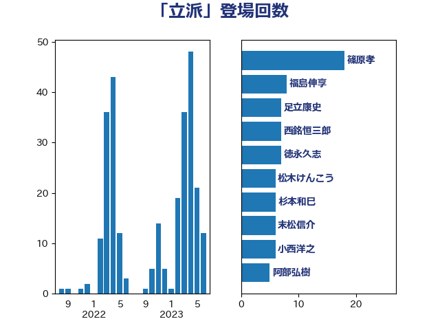

単語「立派」

| 足立康史 | 日本維新の会 | 19 回 |
| 篠原孝 | 立憲民主党 | 11 回 |
| 西銘恒三郎 | 自由民主党 | 7 回 |
| 末松信介 | 自由民主党 | 6 回 |
| 松木けんこう | 立憲民主党 | 6 回 |
| 上田清司 | 国民民主党 | 5 回 |
| 吉田統彦 | 立憲民主党 | 5 回 |
| 後藤祐一 | 立憲民主党 | 5 回 |
| 田嶋要 | 立憲民主党 | 5 回 |
| 萩生田光一 | 自由民主党 | 5 回 |
| 小西洋之 | 立憲民主党 | 4 回 |
| 柚木道義 | 立憲民主党 | 4 回 |
| 舟山康江 | 国民民主党 | 4 回 |
| 大島敦 | 立憲民主党 | 3 回 |
| 大西健介 | 立憲民主党 | 3 回 |
| 寺田学 | 立憲民主党 | 3 回 |
| 小熊慎司 | 立憲民主党 | 3 回 |
| 徳永久志 | 立憲民主党 | 3 回 |
| 牧義夫 | 立憲民主党 | 3 回 |
| 福島伸享 | 無所属 | 3 回 |
| 芳賀道也 | 国民民主党 | 3 回 |
| 荒井優 | 立憲民主党 | 3 回 |
| 菊田真紀子 | 立憲民主党 | 3 回 |
| 谷田川元 | 立憲民主党 | 3 回 |
| 階猛 | 立憲民主党 | 3 回 |
| 青山繁晴 | 自由民主党 | 3 回 |
| 麻生太郎 | 自由民主党 | 3 回 |
| 仁木博文 | 無所属 | 2 回 |
| 佐藤正久 | 自由民主党 | 2 回 |
| 小田原潔 | 自由民主党 | 2 回 |
| 山田賢司 | 自由民主党 | 2 回 |
| 山谷えり子 | 自由民主党 | 2 回 |
| 杉久武 | 公明党 | 2 回 |
| 杉本和巳 | 日本維新の会 | 2 回 |
| 松沢成文 | 日本維新の会 | 2 回 |
| 浅田均 | 日本維新の会 | 2 回 |
| 浜口誠 | 国民民主党 | 2 回 |
| 清水貴之 | 日本維新の会 | 2 回 |
| 石井苗子 | 日本維新の会 | 2 回 |
| 福山哲郎 | 立憲民主党 | 2 回 |
| 藤木眞也 | 自由民主党 | 2 回 |
| 谷公一 | 自由民主党 | 2 回 |
| 青山大人 | 立憲民主党 | 2 回 |
| 高橋千鶴子 | 日本共産党 | 2 回 |
| 三浦信祐 | 公明党 | 1 回 |
| 上月良祐 | 自由民主党 | 1 回 |
| 伊波洋一 | 無所属 | 1 回 |
| 伊藤孝恵 | 国民民主党 | 1 回 |
| 前原誠司 | 国民民主党 | 1 回 |
| 吉川沙織 | 立憲民主党 | 1 回 |
| 吉川赳 | 無所属 | 1 回 |
| 吉田宣弘 | 公明党 | 1 回 |
| 國重徹 | 公明党 | 1 回 |
| 坂本哲志 | 自由民主党 | 1 回 |
| 塩村あやか | 立憲民主党 | 1 回 |
| 太田房江 | 自由民主党 | 1 回 |
| 室井邦彦 | 日本維新の会 | 1 回 |
| 宮本徹 | 日本共産党 | 1 回 |
| 寺田静 | 無所属 | 1 回 |
| 小宮山泰子 | 立憲民主党 | 1 回 |
| 小沼巧 | 立憲民主党 | 1 回 |
| 小野泰輔 | 日本維新の会 | 1 回 |
| 山口俊一 | 自由民主党 | 1 回 |
| 山口壯 | 自由民主党 | 1 回 |
| 岡本あき子 | 立憲民主党 | 1 回 |
| 市村浩一郎 | 日本維新の会 | 1 回 |
| 平口洋 | 自由民主党 | 1 回 |
| 平沢勝栄 | 自由民主党 | 1 回 |
| 打越さく良 | 立憲民主党 | 1 回 |
| 斎藤洋明 | 自由民主党 | 1 回 |
| 新藤義孝 | 自由民主党 | 1 回 |
| 松川るい | 自由民主党 | 1 回 |
| 柳ヶ瀬裕文 | 日本維新の会 | 1 回 |
| 柴田巧 | 日本維新の会 | 1 回 |
| 梅村みずほ | 日本維新の会 | 1 回 |
| 武田良太 | 自由民主党 | 1 回 |
| 江田憲司 | 立憲民主党 | 1 回 |
| 池畑浩太朗 | 日本維新の会 | 1 回 |
| 河野太郎 | 自由民主党 | 1 回 |
| 玄葉光一郎 | 立憲民主党 | 1 回 |
| 玉木雄一郎 | 国民民主党 | 1 回 |
| 石井章 | 日本維新の会 | 1 回 |
| 磯崎仁彦 | 自由民主党 | 1 回 |
| 福田達夫 | 自由民主党 | 1 回 |
| 稲津久 | 公明党 | 1 回 |
| 空本誠喜 | 日本維新の会 | 1 回 |
| 竹内譲 | 公明党 | 1 回 |
| 米山隆一 | 立憲民主党 | 1 回 |
| 自見はなこ | 自由民主党 | 1 回 |
| 若松謙維 | 公明党 | 1 回 |
| 茂木敏充 | 自由民主党 | 1 回 |
| 菅家一郎 | 自由民主党 | 1 回 |
| 西田昌司 | 自由民主党 | 1 回 |
| 赤嶺政賢 | 日本共産党 | 1 回 |
| 赤羽一嘉 | 公明党 | 1 回 |
| 足立敏之 | 自由民主党 | 1 回 |
| 辻元清美 | 立憲民主党 | 1 回 |
| 里見隆治 | 公明党 | 1 回 |
| 野田佳彦 | 立憲民主党 | 1 回 |
| 金子恵美 | 立憲民主党 | 1 回 |
| 鎌田さゆり | 立憲民主党 | 1 回 |
| 阿部弘樹 | 日本維新の会 | 1 回 |
| 音喜多駿 | 日本維新の会 | 1 回 |
| 須藤元気 | 無所属 | 1 回 |
| 額賀福志郎 | 自由民主党 | 1 回 |